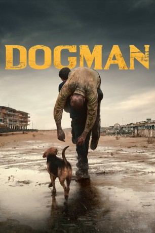

#10508 Dogman
 
 IMDB-Wertung: 7.4 / 10
IMDB-Wertung: 7.4 / 10  Metascore: 75
Metascore: 75 
Der Hundefriseur Marcello (Marcello Fonte), der von allen nur Dogman genannt wird, lebt mit seiner Tochter Alida (Alida Baldari Calabria) in dem trostlosten Vorort einer süditalienischen Küstenstadt ein bescheidenes aber glückliches Leben. Seine Nachbarschaft mag und akzeptiert den sanftmütigen und ruhigen Mann, was ihm sehr wichtig ist. Doch sein einstiges harmonisches Leben wird durch den ehemaligen Boxer Simone (Edoardo Pesce), der den gesamten Ort tyrannisiert, betrübt. Marcello zeigt sich dem drogenabhängigen, außer Kontrolle geratenen Mann anfangs noch loyal gegenüber und ist stets nachsichtig, obwohl ihn dieser ständig demütigt. Doch ein bitteres Ereignis, nach dem Marcellos Nachbarn ihn nicht mehr respektieren, zwingt den Hundefriseur zu drastischen Maßnahmen. Er schmiedet einen furchtbaren Plan, um sich gegen Simone zu wehren und seine Würde zurückzugewinnen…
Jahr: 2018
Dauer: 102 Minuten
FSK: 16
Land: Italien Studio: Alamode FilmTonspuren:
Untertitel: Deutsch,
Auflösung: 1080p (1920x802) Größe: 7649 MB
Genre: Thriller, Drama, Krimi
Regisseur: Matteo Garrone
Drehbuch: Ugo Chiti, Matteo Garrone, Massimo Gaudioso, Ugo Chiti, Matteo Garrone
Soundtrack: Michele Braga
Darsteller:
- Marcello Fonte als Marcello
- Adamo Dionisi als Franco
- Aniello Arena als Ispettore Polizia
- Mirko Frezza als Pusher
- Edoardo Pesce als Simoncino
- Nunzia Schiano als Madre Simoncino
- Francesco Acquaroli als Proprietario Videolottery
- Gianluca Gobbi als Proprietario Ristorante
- Alida Baldari Calabria als Alida
- Laura Pizzirani als Madre Alida
- Giancarlo Porcacchia als Gasparone
- Marco Perfetti als Pusher 2
- Vittorio Russo als Commerciante
- Gennaro Iannone als Commerciante
- Emanuele Barbalonga als Padrone Cane
- Daniele Saliceti als Presentatore Fiera
- Nelly Oliva als Presentatrice Fiera
- Miriam Platano als Angelo Night
Datei: X:\2018(A-F)\Dogman (2018, FSK16, 1920x802).mkv seit 18.01.2019
Festplatte: HD 2017(A-Z)-2018(A-F)
 Es gibt insgesamt 151 Filme in der Gruppe '2018(A-F)'
Es gibt insgesamt 151 Filme in der Gruppe '2018(A-F)'